Explore Cusco
A Brief History
Cusco was the capital of the Inca Empire before Spanish forces seized it in 1533. Inca masonry in walls and fortresses such as Sacsayhuamán underlies colonial churches and arcaded squares built atop palaces. As a highland administrative centre and gateway to Machu Picchu, the city preserves Quechua traditions alongside Spanish religious architecture, making it a focal point for understanding Andean imperial and colonial history.
Attractions Map
Top Sights & Activities
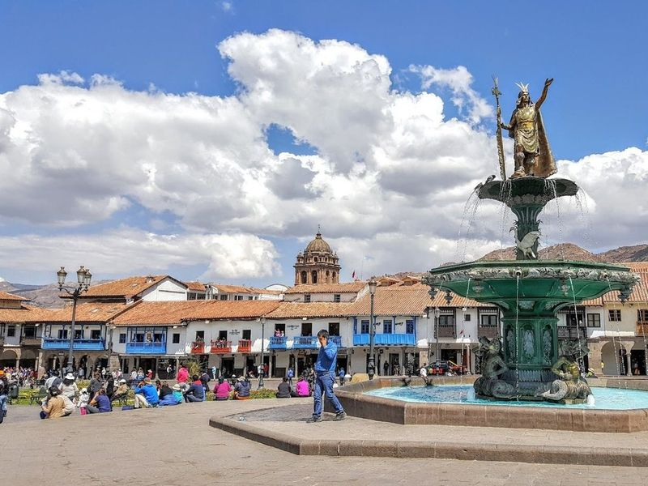
Plaza de Armas
Plaza Mayor de Cusco, also known as Plaza de Armas, is a vibrant urban hub featuring colonial arcades, a cathedral, gardens, and a central fountain. It serves as the starting point for exploring major Cusco attractions such as Qoricancha and La Catedral. Visitors can immerse themselves in the city's culture by browsing through various shops and markets along the way. The square also hosts religious and cultural celebrations with music and dancing filling the streets.
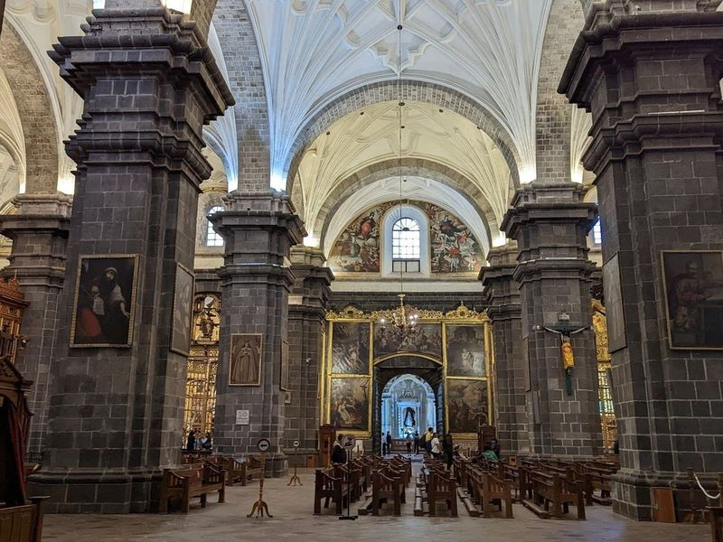
Cusco Cathedral
Cusco Cathedral, constructed in the 16th and 17th centuries, is a grand structure adorned with colonial paintings. The cathedral was built over many years by various architects and masters, using stones from the Sacsayhuaman complex. It houses impressive pieces of art including 256 silver items and a silver monstrance embellished with pearls, rubies, amethysts, sapphires, and topazes.
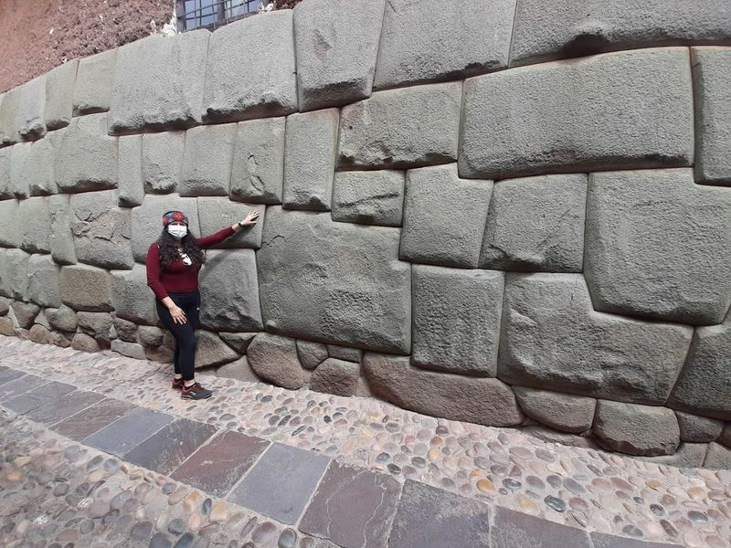
Twelve Angled Stone
The Twelve Angled Stone, located in Cusco, Peru, is a remarkable example of Inca masonry. This legendary stone is part of a wall built by the Inca Pachacuti and showcases their advanced stone-cutting techniques. What makes it special is its perfect finish and precisely interlocking surface with twelve angles that fit seamlessly without mortar.
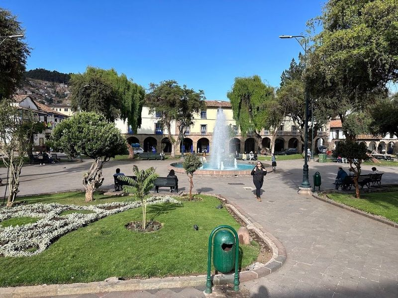
Plaza Regocijo
Plaza Regocijo is a charming tree-lined square located in downtown Cusco, Peru. It features a beautiful fountain and is surrounded by arcades housing cafes and museums of art and history. Visitors can relax, people-watch, and enjoy the lively atmosphere with locals. The plaza offers plenty of dining options with numerous cafes and restaurants nearby. It's also close to other attractions like Plaza de Armas, making it an ideal spot for relaxation and sightseeing.
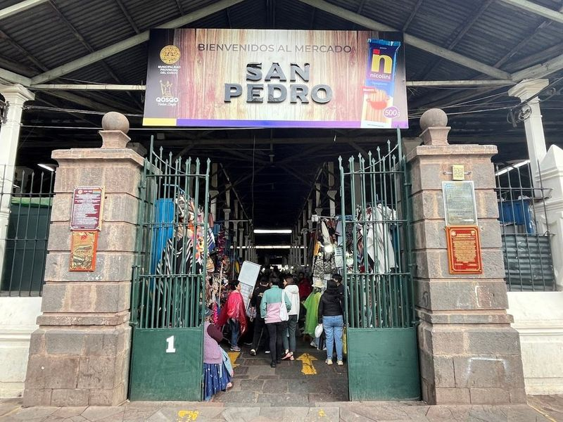
Mercado Central de San Pedro
Mercado Central de San Pedro is a lively covered market offering a variety of goods such as produce, meat, clothing, souvenirs, snacks, and fresh juices. Before visiting the market, explore the bohemian area of San Blas with its cobbled streets and Inca history. The neighborhood is known for its local artisans creating beautiful crafts sold at the Santurantikuy fair.
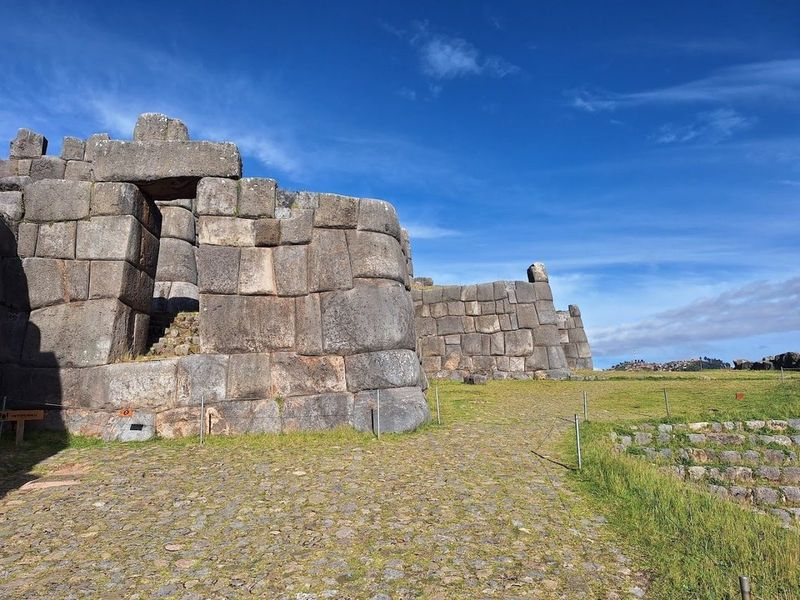
Saqsaywaman
Saqsaywaman is an awe-inspiring archaeological site located just north of Cusco, Peru. This ancient Inca fortress is renowned for its impressive stone walls, constructed with remarkable precision and without the use of mortar. The site features a complex layout that includes residential areas, temples, roads, and aqueducts, showcasing the advanced engineering prowess of the Incas.
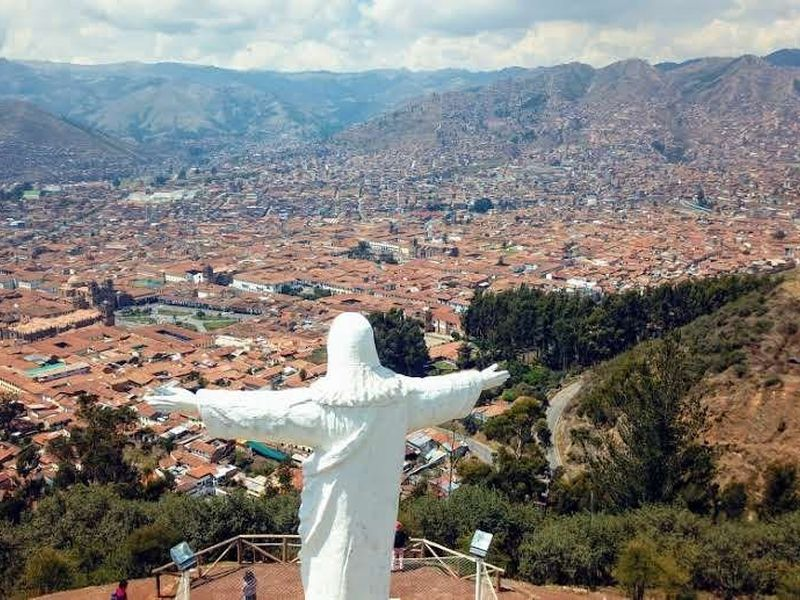
Mirador desde el Cristo Blanco
Mirador desde el Cristo Blanco is a popular destination in Cusco, featuring a 26-foot Christ statue on a hill. The statue was donated by the Arab-Palestinian community and built in 1945 by local sculptor Francisco Olazo. To reach the mirador, visitors can take a steep hike from the main square through Hatunrumiyoc street and atoqsayquchi street.
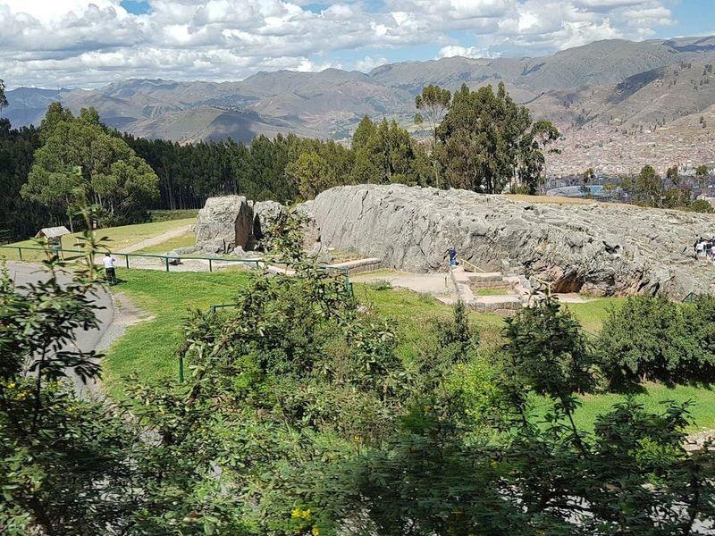
Q'enco Archaeological Complex
Q'enco Archaeological Complex, situated just outside Cusco, Peru, is a captivating ancient Inca site featuring intricate rock carvings and underground passages. This ceremonial center showcases the Incas' advanced understanding of astronomy and spiritual traditions. Visitors can explore the mysterious carvings and descend into the underground chambers to gain unique insights into Inca religious and ceremonial practices.
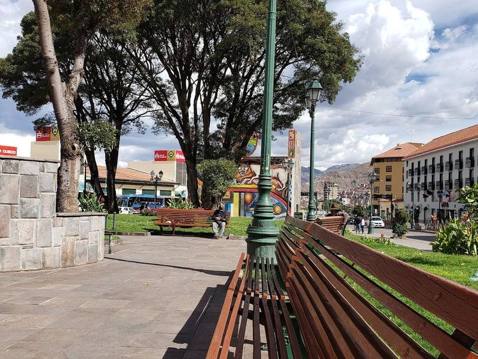
Orellana Pumaqchupan Park
Orellana Pumaqchupan Park, located in front of Centro Artesanal, features a large fountain at its center where visitors can walk in and even go behind the waterfall. The fountain operates every 15-30 minutes and is surrounded by intricate art murals. The park offers a serene atmosphere with well-maintained grass, benches for relaxation, and a nearby souvenir market. Despite occasional haggling from salespeople, it's generally clean and not overly crowded.
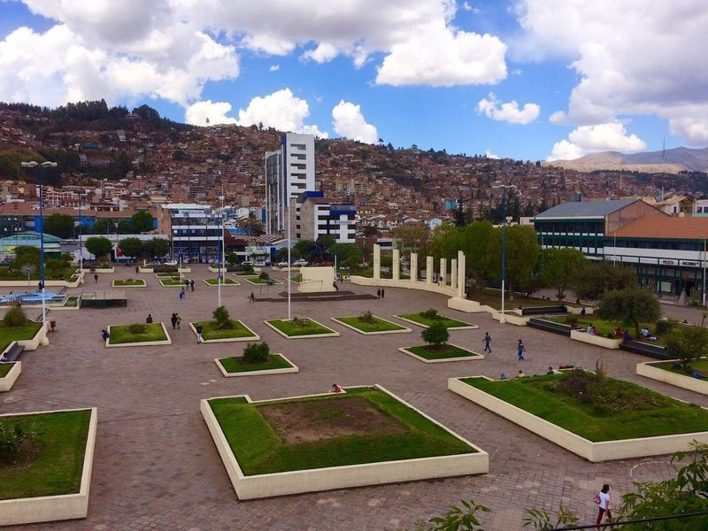
Plaza Túpac Amaru
Plaza Túpac Amaru is a paved square featuring an equestrian statue of a late-Incan monarch and hosts a vibrant weekend craft market. Located 25 km from Puerto Maldonado, it's accessible via an hour-long journey on an affirmed land road. The surrounding landscape is home to diverse wildlife, including lizards, monkeys, and various bird species.
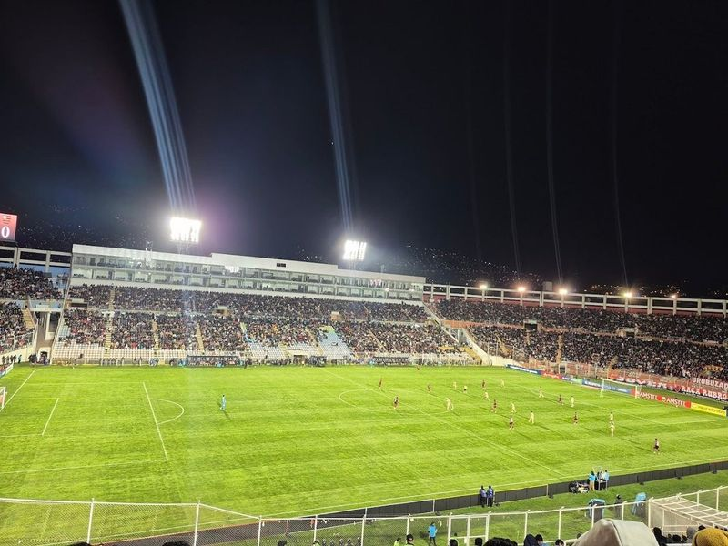
Estadio Inca Garcilaso de la Vega
Estadio Inca Garcilaso de la Vega is a must-visit for sports enthusiasts in Cusco. This soccer stadium, inaugurated in 1958, has a capacity of 42,056 spectators. It holds historical significance as it houses the remains of the mestizo writer Garcilaso de Vega. Visitors can expect an authentic cultural experience with snacks and drinks available during games.